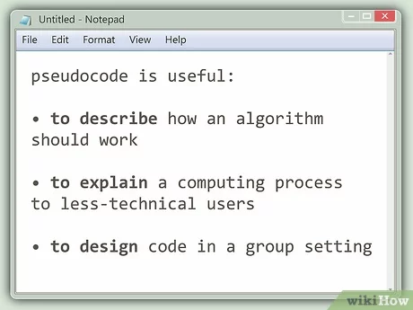
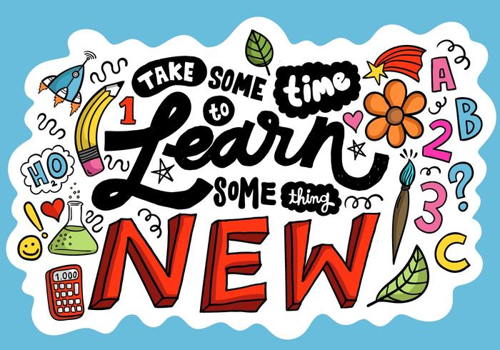
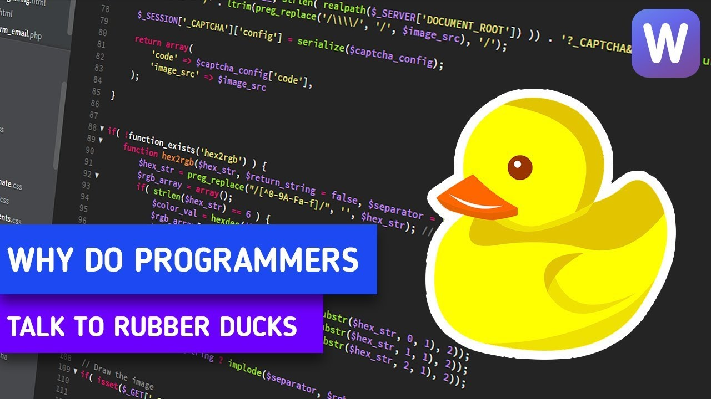
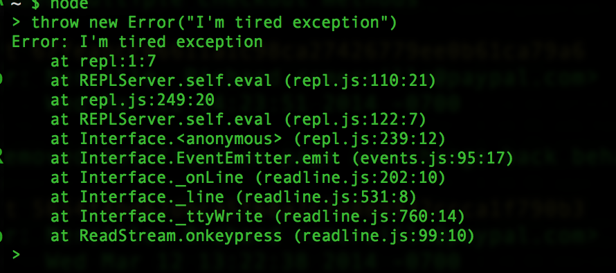

Problem facing and solving
I think everybody lived on earth at least has to experience with problem in life, whether you were trying to solve it or not. Myself as everyday in life, I have to face with decision and many problem. I guess it is just how you expected it to be done.
| What was the problem? |
It was time when I try to add a hidden block which content my url to other sprint for my blog page. |
| Solving techniques |
Obviously, I tried with Google first. Research on how to toggle a Then I tried to explain it to my partner, she is a listener and very patient to me. Despite, she has no ideas or no knowledge regards this, but she gave her point of view and ideas. Sometimes, it happened in a way you never know. An advice from a non-tech friend is even simplier than a techniques from StackOverflow. |
| How did you feel? |
I felt incredible great when finally manage to get it work. |
| What did you learn? |
Listen to an advice from a developer views and also from someone does not have a clue about this. |
I. The Pseudocode
Pseudocode method is providing useful way to describe your code in detail an step-by-step approached. By writing pseudocode, I can understand what step I should be doing next eventhough it is not quite clear, but I guess it is all about researching and know what you want to achieve ahead.
II. Trying something new
I always love to try something new !! Most of the time when I have to deal with all the challenges in JavaScript Kata, there is always some new built-in methods of JavaScript that I need to research and quickly practice with it. I have to read the instruction and its syntax and then try to fit that method into the answer. It was struggling to understand at the beginning, but once you managed to plug it in your code and start doing small things happen, you soon realized how amazing it is.
III. Rubber Ducky
Find out more about Rubber Duck Debugging
The rubber duck debugging method is as follows:
- Beg, borrow, steal, buy, fabricate or otherwise obtain a rubber duck (bathtub variety).
- Place rubber duck on desk and inform it you are just going to go over some code with it, if that’s all right.
- Explain to the duck what your code is supposed to do, and then go into detail and explain your code line by line.
- At some point you will tell the duck what you are doing next and then realise that that is not in fact what you are actually doing. The duck will sit there serenely, happy in the knowledge that it has helped you on your way.
For me, by trying to explain a code to my friend, my partner and tell them what I was trying to do is really fun. First of all, most of them does not know anything about coding. Secondly, they do not like these kind of stuff. It was fun because you know that the person you are trying to explain to, they have no clue and empty knowledge about what you are doing. But still, they spent time to listen, your job is to explain them very carefully, breaking down into small pieces.
It just not about practicing patient but it is showing how much I understand my code. To be able to explain your code in a very detail way is extremely hard, because sometimes you would not be able to understand everything you wrote. I felt that with the more effort you I into explaining it, the deeper I can understand the problem.
IV. Reading error messaged
In JavaScript Kata challenge, I spent most of the time on researching the new built-in methods and reading its error message. By reading the message, you can just solve the problem step-by-step. Get the first step done, then trying to get the next one. It easier to solve the whole big problem by answering each of its small issues.
V. Console.logging
Apart from Google, "Console.log()" is my next best mate. It is super helpful for me to examine and checking my code. It helps me by breaking down my whole big messy code into a small function. Say if I have 5 logics in my code and want to break it step-by-step, I can just get my first logic to run console.log('something'). And checking it with the Web Browser whether it is working or not. If it works, then we simply move to the next one, else we can double check our logic.
VI. Googling
I think not a single person who is working or studying is not using Google. It is suuuuuupppppppeeer useful for everyone to research the knowledge and access information. 70% of my studying time, I googling stuffs, such like answer, explanation and how to solve some coding issues.
VII. Asking your peers
Talking and asking your friends are the best way. I normally spent most of the day at school, not because I want to focus on studying but also creating strong network with other people in my cohort. We may not be able to find out the answer for the problem, but least we can discuss and sharing our ideas.
VII. Asking your coaches
I felt blessed to always have Ollie around. Especially, I spent my time most at EDA and always see my facillitator, Ollie is super enthusiastic and eager to help every student.